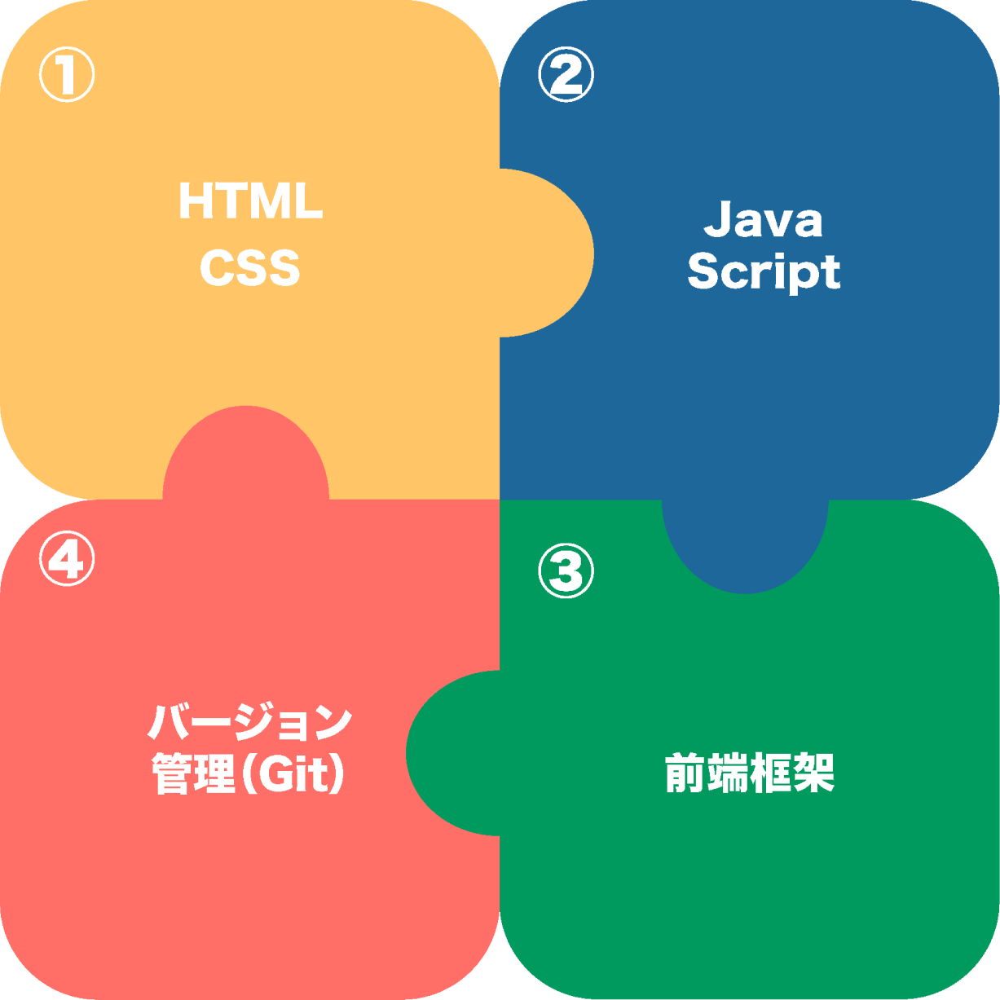

コーダー・フロントエンドエンジニア

Ｗebページの見た目や使い勝手を作る役割です。HTMLやCSS、JavaScriptを学び、それらを使ってユーザーが操作する部分を作ります。
また、ReactやVueなどのフレームワークを使うことで、より動的で使いやすいウェブアプリケーションを開発します。
Ｗebページの見た目や使い勝手を作る役割です。HTMLやCSS、JavaScriptを学び、それらを使ってユーザーが操作する部分を作ります。
また、ReactやVueなどのフレームワークを使うことで、より動的で使いやすいウェブアプリケーションを開発します。